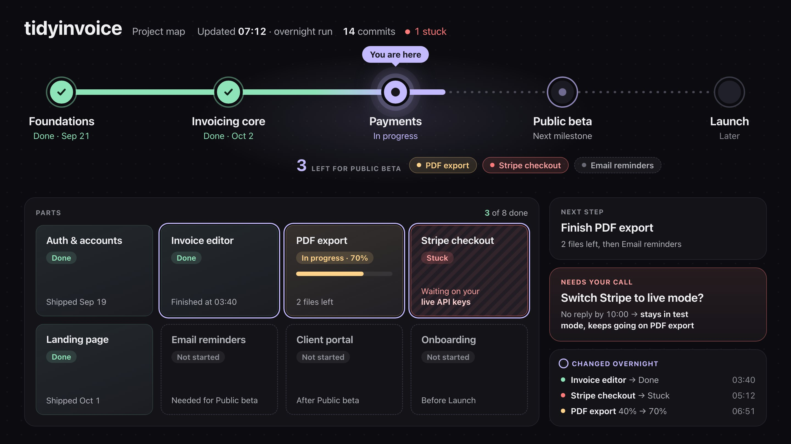

This page explains one rules file, four skills and one subagent. Each section says what the piece does, when to use it, and when not to. You can copy all of them in one download.
Pick by the size of the work. Small work needs one command. Large work needs a plan first. A whole project with many parallel streams needs a coordinator.
| You have | Use |
|---|---|
| One clear task: a bug fix, a small feature, a refactor | /cook-it <task> |
| A large goal that needs many commits | /plan-epic <goal> |
| A planned epic that you want to run while you are away | /cook-epic <epic> |
| A whole project with many streams of work, and you give outcomes, not tasks | /orchestrate |
| The question "where are we?" | project-map |
| Rules that every session must follow | AGENTS.md |
The rules file sits under everything. The skills stack on each other. /cook-it does one task. /cook-epic runs /cook-it once for each task in an epic. /plan-epic makes that epic. /orchestrate sits on top and runs many agents at once. The project map shows the state of all of it.
All of the skills keep their state in beads (the bd command), not in the chat. So a new session, or an agent with no memory, can continue the work.
The standing rules that every agent session reads before it does anything.
An agent forgets everything between sessions. This file is how it remembers your rules. Claude Code reads ~/.claude/CLAUDE.md at the start of every session. Codex reads ~/.codex/AGENTS.md. Put the same text in both.
The most useful rule is the report format. The agent must answer in Simplified Technical English (ASD-STE100): short sentences, simple words, verdict first. Every session report answers four things: what this is about, what it did, whether you must act, and what is next. You can then read any session in 30 seconds.
rm and mv: "${dir:?}".pgrep -f. It matches itself.Does one bounded task from start to finish: plan, code, review, test, commit, push, close the issue.
You give it an issue ID or one sentence. It does not ask for approval. Typing the command is the approval. It shows the plan so you can stop it if the plan is wrong.
The important part is that it scales the checks to the task. A one-line fix gets no plan and a self-review. A change across many files gets a written plan, a critic agent, and several reviewer agents. Before it starts, it makes four decisions and says why for each one:
The reviewers always check "parity". When new code copies the job of old code, the reviewer opens the old code and lists every step it does. Missing steps are the bugs that a diff does not show.
/plan-epic.Turns a large goal into an epic: one parent issue with ordered child issues, each one a single commit of work.
An epic is a parent issue in beads. Its children are the tasks. Dependencies between children set the order. A child can start only when the children it depends on are closed.
docs/agent-orientation.md): paths, check commands, traps. It commits the card./cook-epic <id>. If you said "plan and run it", it starts the run itself./cook-it task./cook-it.Runs every child of an epic while you are away, one fresh agent per child.
The skill starts simmer, a small runner program. simmer runs in the background and does not need the chat. For each child that is ready, it:
/cook-it on that one child.push: true.A child that fails twice gets status "blocked" with the error in a note. The run continues with the next child. All state is in beads. If the run crashes, run the same command again and it continues.
Check progress from any terminal with simmer status <epic>.
bd ready --parent <epic> shows tasks.bun run typecheck && bun run test. Set yours in simmer.json./plan-epic first./cook-it <epic> again and again. Each run does one child.Makes the agent the lead of the project. It plans, delegates, checks and reports. It writes no code itself.
You give outcomes, such as "make the maps look incredible". The coordinator cuts them into lanes. A lane is one piece of work with one agent, one issue, one worktree, one log and one review page. Each lane gets a fresh agent and a full written brief, from a template. Lanes run in parallel, but never on the same files.
/cook-epic./cook-it.projects/<name>/, beside SKILL.md. It holds that project's README, lane rules, watchdog and Codex runner. The coordinator creates the README as it learns the project. The download has the two templates and an example Codex runner, not the private project folders.Draws one HTML page that answers "where are we?" for the project.
A subagent is a helper agent with its own instructions and tools. The main agent starts it. This one reads the code, the git history and the issues. Then it writes .project-map/index.html in the repo.

It can write only inside .project-map/. A hook script blocks every other write.
jq and git for the hook.These commands copy the skills, the subagent and the hook into Claude Code. They do not touch your current CLAUDE.md.
curl -fsSL https://stack.yiin.lt/stack.tar.gz | tar -xz
mkdir -p ~/.claude/skills ~/.claude/agents ~/.claude/hooks
cp -rf stack/skills/* ~/.claude/skills/
cp -f stack/agents/* ~/.claude/agents/
cp -f stack/hooks/project-map-guard.sh ~/.claude/hooks/
chmod +x ~/.claude/hooks/project-map-guard.shThen open stack/AGENTS.md. Change the personal sections to match your setup. Save it as ~/.claude/CLAUDE.md, or add its rules to the file you have.
For Codex, copy the skills to ~/.agents/skills/ and the rules file to ~/.codex/AGENTS.md. The subagent and the hook work only in Claude Code.
bd (beads). All four skills use it. Run bd init in each repo.simmer for /cook-epic. Private. Ask for access./orchestrate.unslop skill from pstack.SKILL.md file. You start it with /name. The agent then follows its instructions.bd/orchestrate, one piece of work with one agent, one issue and one worktree.